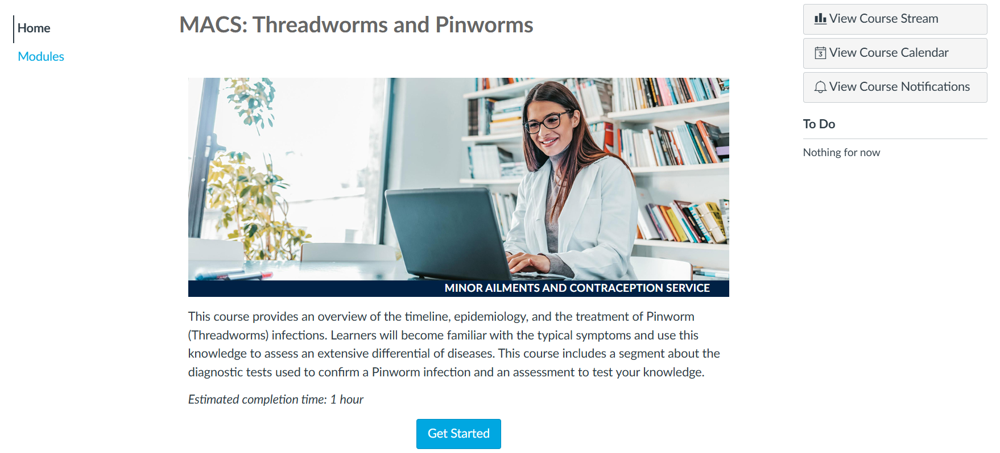

This project involved the design and development of online courses for pharmacists in British Columbia to expand their scope of practice.
This project involved the development of eLearning courses for pharmacists in British Columbia to expand their scope of practice for 21 minor ailments and contraception. This project aimed to create accessible, interactive online courses for pharmacists to confidently perform these expanded services.
Objective: Enable pharmacists to deliver enhanced healthcare services by providing accessible, high-quality online courses that train them in treating minor ailments and prescribing contraceptives.
Collaborators: Subject matter experts from the UBC Faculty of Pharmaceutical Sciences and the Office of Education Technology and Learning Design (OETLD).
Tools Used:
Needs Analysis and Stakeholder Coordination
At the start of each project, a needs analysis is conducted to identify the key learning objectives and gaps. This involves reviewing project requirements and ensuring alignment with organizational goals (e.g., BC government’s pharmacist initiative). Following this, the project is announced to Subject Matter Experts (SMEs), and interested individuals reach out to participate. Updates are provided once SMEs are finalized for the project.
Kick-off Meeting with SMEs
In the initial meeting with SMEs, the project timeline, deadlines, and the learning design process are introduced. This ensures all stakeholders are aligned on expectations and the course objectives.
Learning Design Proposal Development
After receiving the full course content, a comprehensive Learning Design Proposal is created. This proposal acts as a guide for developing the course, detailing content distribution, and identifying opportunities to integrate multimedia elements such as images, videos, and interactive activities.
Design Proposal Review and Collaboration
A meeting is scheduled with SMEs to review the Learning Design Proposal. This collaborative session allows for feedback on design decisions, ensuring the course meets content accuracy, learner engagement, and performance objectives.
Course Development and Design
After design decisions are confirmed, the course is developed in the Learning Management System (LMS). This phase includes structuring the course, creating multimedia content (videos, interactive activities), and ensuring that the course design supports learner engagement and knowledge retention.
Final Review and Quality Assurance
Before the course is launched, final feedback is gathered from SMEs and Expert Reviewers. This review process ensures that the course content is accurate, aligns with the learning objectives, and is ready for learner engagement.